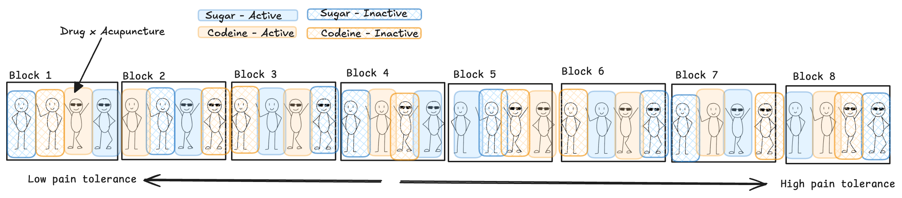
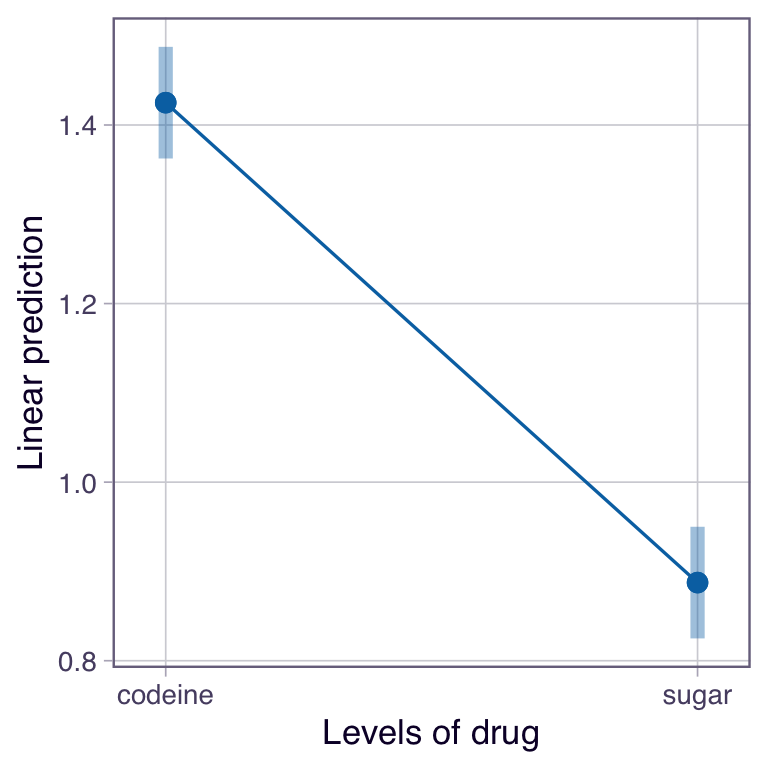

Main Effect of Drug

contrast estimate SE df lower.CL upper.CL t.ratio p.value
codeine - sugar 0.537 0.0425 21 0.449 0.626 12.641 <0.0001
Results are averaged over the levels of: acupuncture, pain_tol
Confidence level used: 0.95 R note
For theses follow-up analyses we need functions from the emmeans package.
The first step is creating an lsmeans object using the emmeans() function and our mod_obj object!
Codeine results in the highest mean pain relief at 1.42 (s.e. 0.03). This is, on average, 0.53 points more relief than the sugar pill (t = 12.64; df = 21; p < 0.0001).